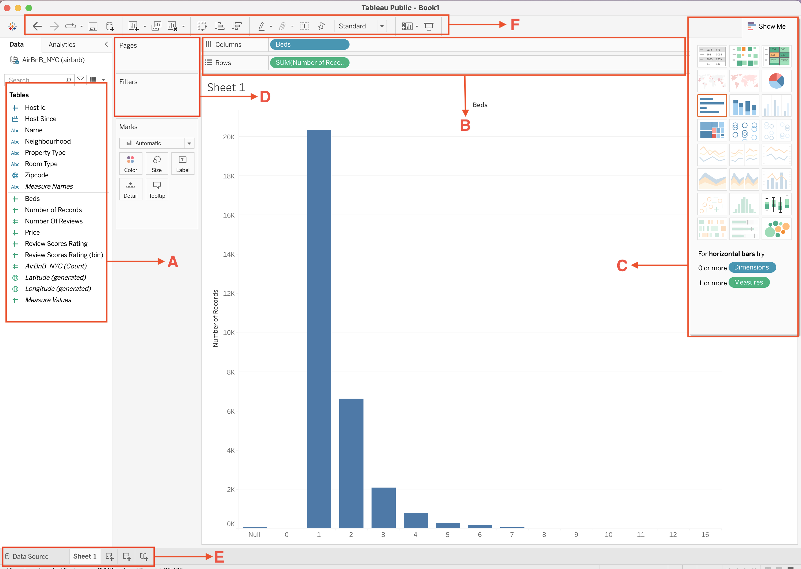
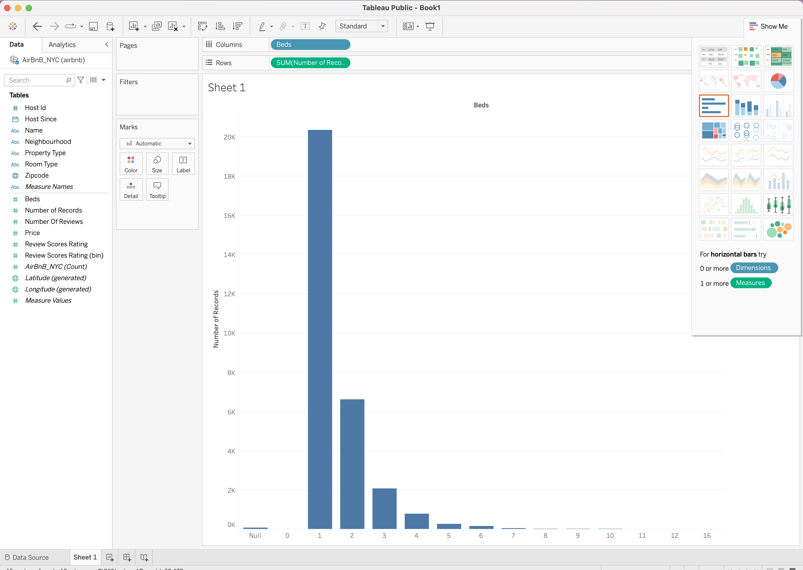
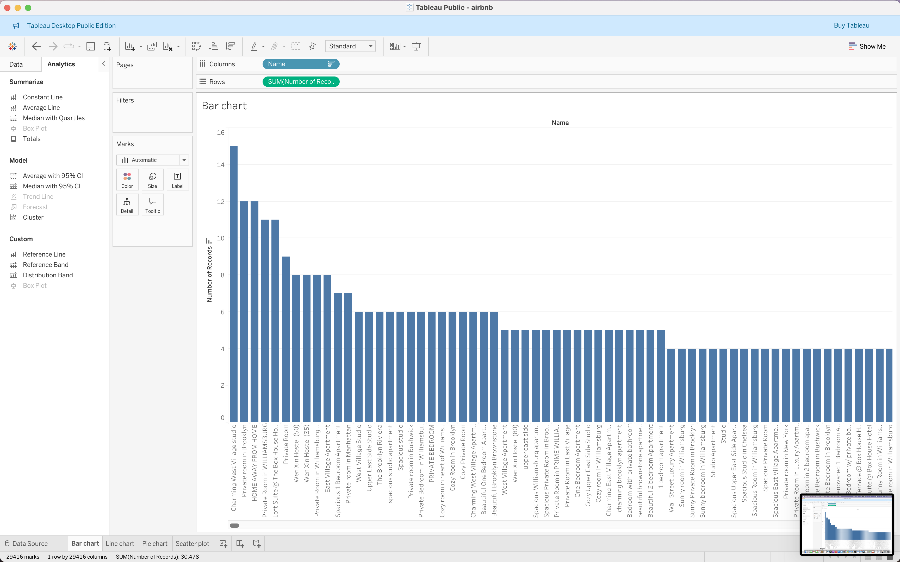
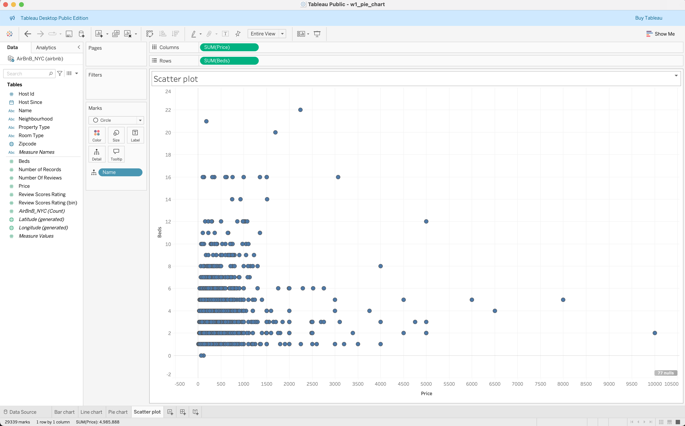
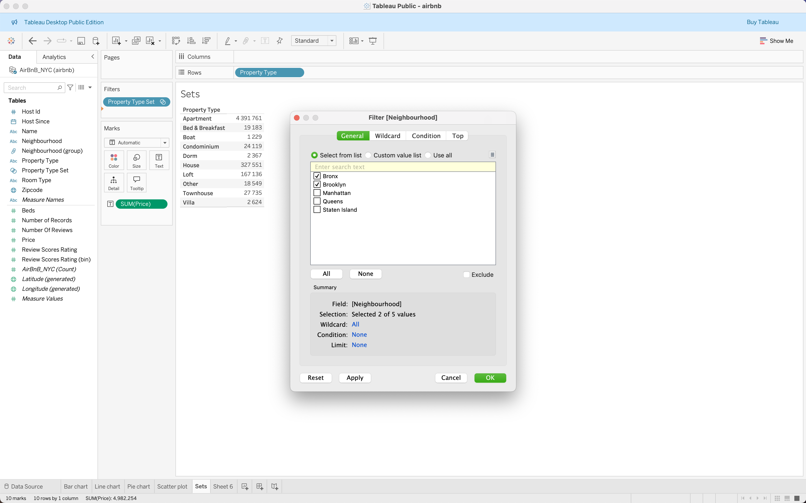

Tableau Session 01: Introduction To Tableau
Workbooks, Data Types, Fields, Basic Charts, Filtering
Overview
This session introduces the foundations of Tableau — the leading tool for interactive data visualization and business intelligence.
Students learn how to connect to data, explore the Tableau interface, and create their first simple dashboard.
By the end of the class, you should be able to connect to common data sources, understand Tableau’s data model, and build your first visualizations using key chart types..
What Is Tableau?
Tableau is a data visualization and analytics platform designed to help people see and understand their data.
It transforms raw datasets into meaningful visual stories that support data-driven decision-making.
Tableau connects easily to spreadsheets, databases, or live cloud data, enabling analysts to explore data visually without writing complex code.
Tableau Products
Each Tableau product serves a distinct purpose within the analytics lifecycle.
| Product | Description |
|---|---|
| Tableau Desktop | Authoring tool for building visualizations and dashboards. |
| Tableau Server | On-premise platform for sharing dashboards securely within an organization. |
| Tableau Cloud | Cloud-hosted version of Tableau Server — no infrastructure required. |
| Tableau Public | Free, cloud-based platform for publishing dashboards publicly. |
| Tableau Prep | Tool for cleaning, combining, and reshaping data before analysis. |
| Tableau Next | Experimental module for automated insight generation and trend detection. |
💡 Tip:
Tableau Public is ideal for practice and portfolio building. Use Tableau Desktop Public Edition to create and publish dashboards online.
Download Tableau Public
Access Sample Datasets
Dataset used in class: airbnb.xlsx

Tableau File Types
| File Type | Extension | Description |
|---|---|---|
| Workbook | .twb |
XML file storing visualizations and connections. |
| Packaged Workbook | .twbx |
Workbook + data files (used for sharing). |
| Data Source | .tds |
Metadata definition for a connection. |
| Packaged Data Source | .tdsx |
.tds plus data extract. |
| Extract File | .hyper |
Optimized local data extract. |
| Bookmark | .tbm |
Stores a single sheet. |
Tableau Interface Overview
The Tableau interface is divided into several main components that allow you to manage data, build visuals, and combine them into dashboards.
| Section | Function |
|---|---|
| Data Pane (A) | Contains all fields (dimensions, measures, parameters). |
| Shelves (B) | Control how fields are displayed in a view (Rows, Columns, Filters). |
| Marks Card (C) | Manages visual elements such as color, size, shape, and labels. |
| Filters Shelf (D) | Restricts data displayed in a worksheet. |
| Dashboard Pane (E) | Combines multiple sheets into one unified view. |
| Toolbar & Buttons (F) | Provides shortcuts for key actions (undo, redo, sort, save). |

Core Tableau Concepts
Dimensions vs Measures
- Dimensions are qualitative fields used to categorize data (e.g., Region, Category, Date).
- Measures are quantitative fields that can be aggregated (e.g., Sales, Profit, Quantity).
| Example | Type |
|---|---|
Customer Name |
Dimension |
SUM(Sales) |
Measure |
AVG(Profit) |
Measure |
Discrete vs Continuous Fields
- Discrete fields create headers and categories (blue pills).
- Continuous fields create axes and ranges (green pills).
| Type | Example | Visualization Effect |
|---|---|---|
| Discrete | Region, Category |
Creates labels or categories |
| Continuous | SUM(Sales), Date |
Creates an axis for measurement |
 |
 |
|---|---|
| Continuous | Discrete |
Tip: You can convert between discrete and continuous by right-clicking a field and selecting Convert to Continuous or Convert to Discrete.
Creating Your First Visualization
Step 1: Connect to Data
- Go to Data → Connect to Data
- Select
ExcelorText File
- Choose
airbnb.xlsxand drag the sheet into the workspace.
Step 2: Explore Data Types
Observe the data pane to identify: - Number fields (decimal or whole) - Date fields - String (text) fields - Geographic fields (automatically assigned roles like City, Country)
Step 3: Build Basic Charts
| Chart | Description | Example Fields |
|---|---|---|
| Bar Chart | Compare values across categories | Region vs SUM(Sales) |
| Line Chart | Show trends over time | Month vs SUM(Profit) |
| Pie Chart | Show proportions | Category vs SUM(Sales) |
| Scatter Plot | Display relationships between two measures | SUM(Sales) vs SUM(Profit) |
|  |  |
 |
 |
|---|---|---|---|
| Bar Chart | Line Chart | Pie Chart | Scatter Plot |
Step 4: Apply Filters, Groups, and Sets
| Function | Purpose | Example |
|---|---|---|
| Filters | Focus analysis on specific data subsets | [Region] = "East" |
| Groups | Combine similar categories | Group small cities into “Other” |
| Sets | Create dynamic subsets based on conditions | Customers with Sales > 5000 |
| Sorting | Arrange data by ascending/descending value | Sort by Profit descending |
|  |  |
 |
 |
|---|---|---|---|
| Filters | Groups | Sets | Sorting |
Reflection and Discussion
- How does Tableau differ from Excel or Power BI in the way it connects to and visualizes data?
- Which chart types do you find most intuitive for understanding business patterns?
- What data sources would you most likely use in your future Tableau projects?
Write short notes or share in class for discussion.
Assignment
Create a simple Tableau dashboard using the Airbnb dataset.
- Connect to
airbnb.xlsx
- Build at least three visualizations (bar, line, scatter, or pie)
- Add a filter or group for interactivity
- Publish your dashboard to Tableau Public
- Include a short reflection (2–3 sentences) on what your visualization shows.
Recommended Resources
Articles 1. Getting Started with Tableau
2. Chart Chooser for Tableau
Videos 1. Introduction to Tableau for Beginners
Preview of Next Class
In the next session, we’ll explore data connections and relationships in Tableau — including joins, blends, and unions — and learn how to combine multiple data sources effectively.